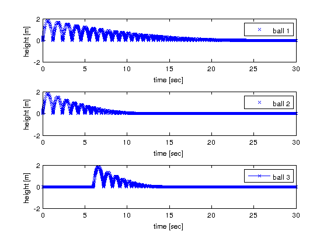
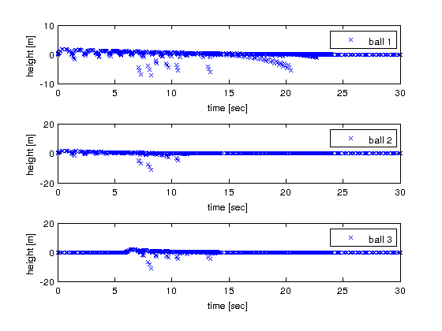

Plot and Statistics for 3 Balls
Analyses combined discrete-continuous model of three bouncing balls with different attenuations. Two balls bouncing from the beginning, the third ball is started by a discrete event after 6 seconds.
Contents
Call: analyse_3_balls(root_model,tstart,tend,tout,yout)
File: DEVSPATH/02-examples/hybrid/bouncing_balls/analyse_3_balls.m
Plots
- Continuous trajectories of balls (from tout / yout)
- Continuous trajectories of balls (from recorded values in ball objects)
Plot from tout/yout returned by ode45.

Plot from trajectories recorded in atomic models of balls.

In height_traj of balls a time/value pair is recorded every time the ODE-solver calls the rate of change function dq = f(obj,gt,x,y) and asks for current derivations. The plot shows, how the event detection of the ODE-solver works.
Statistics
From discrete variables
- Number of hits to the ground of each ball,
- Bounce duration of balls.
DEVS Tbx Home Examples Modelbase << Back